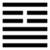

Sơn Thiên Đại Súc (大畜 dà chù)
Mình không có càn bậy (Vô vọng) rồi bản thân mới có thể chứa được nhiều tài, đức, hoài bão, nên sau quẻ vô vọng, tới quẻ Đại súc. Chữ súc trong quẻ này cũng là chữ súc trong quẻ Phong thiên tiểu súc, có ba nghĩa: Nhóm chứa, nuôi nấng, ngăn lại. Thoán từ dùng theo nghĩa chứa (súc tích, uẩn súc), mà Hào từ dùng với nghĩa ngăn lại.
Thoán từ:
大畜: 利貞, 不家食,吉; 利涉大川．
Đại súc: Lợi trinh, bất gia thực, cát; lợi thiệp đại xuyên.
Dịch: Chứa lớn: Chính đáng (theo chính đạo) thì lợi. Không phải ăn cơm nhà (tức được hưởng lộc của vua), tốt; vượt qua sông lớn (làm việc khó khăn, gian nguy để giúp nước) thì lợi.
Giảng: Trên là núi, dưới là trời, núi mà chứa được trời thì sức chứa của nó thật lớn, cho nên gọi là Đại súc. Nói về bậc quân tử thì phải “chứa” tài đức, nghĩa là tu luyện cho tài đức uẩn súc; trước hết phải cương kiện như quẻ Càn, phải rất thành thực, rực rỡ (có văn vẻ) như quẻ Cấn, mà những đức đó phải mỗi ngày một mới, nhật tân kì đức (Thoán truyện); phải biết cho đến nơi đến chốn, làm cho đến nơi đến chốn, đủ cả tri lẫn hành (đại tượng truyện).
Người nào “uẩn súc” được như vậy thì được quốc gia nuôi, và khi xã hội gặp gian truân thì cứu được (vượt qua sông lớn), vì ứng với trời (như hào 5 ở vị cao ứng với hào 2 trong quẻ Càn là trời).
Ý nghĩa các hào:
1.
初九．有厲．利已．
Sơ cửu: Hữu lệ, lợi dĩ.
Dịch: Hào 1, dương : có nguy, ngưng lại thì lợi.
Giảng: Hào này cương kiện, muốn tiến lên nhưng bị hào 4, âm ở trên chặn lại (trong các hào, súc có nghĩa là ngăn chứ không có nghĩa là chứa), nếu cố tiến thì nguy, ngưng lại thì tốt.
2.
九二: 輿說輹．
Cửu nhị: Dư thoát phúc.
Dịch: Hào 2, dương, như chiếc xe đã tháo cái trục.
Giảng: Hào này cũng bị hào 5, âm, ngăn lại như hào 1, nhưng vì đắc trung (ở giữa nội quái), nên biết tự ngăn mình (như tự tháo cái trục xe ra) để thôi không đi. Như vậy không có lỗi.
3.
九三: 良馬逐; 利艱貞．日閑輿衛, 利有攸往．
Cửu tam: Lương mã trục; lợi gian trinh,
Nhật nhàn dư vệ, lợi hữu du vãng.
Dịch: Hào 3, dương : như hai con ngựa tốt chạy đua nhau; phải chịu khó giữ đạo chính thì có lợi, lại phải thường ngày luyện tập, dự bị các đồ hộ thân thì tiến lên mới có lợi.
Giảng: Chúng ta để ý: hai hào 1, 2 đều là dương cương mà đều bị hai hào âm nhu (4 và 5) ngăn cản, vì tuy cương mà ở trong nội quái (quẻ dưới), cũng như các tướng tài năng phải phục tùng Võ Hậu, Từ Hi Thái Hậu. Không phải thời nào dương cũng thắng âm cả đâu. Tới hào 3 này, may được hào trên cùng cũng là dương, ứng với mình như một đồng chí, cho nên cả hai hăng hái như hai con ngựa tốt đua nhau chạy; nhưng hăng quá mà không nhớ rằng trên đường gặp nhiều gian nan, không luyện tập đề phòng hàng ngày thì không tiến được xa, nên Hào từ khuyên như trên.
4.
六四: 童牛之牿, 元吉．
Lục tứ: đồng ngưu chi cốc, nguyên cát.
Dịch: Hào 4, âm: như con bò mộng còn non, mới nhú sừng, đặt ngay mảnh gỗ chặn sừng nó, thì rất tốt.
Giảng: Trong quẻ Đại súc, hào âm này vẫn ngăn chặn được hào 1, dương, vì tuy nó âm nhu, nhưng hào 1 ở đầu quẻ là dương còn non, như con bò mọng mới nhú sừng, nếu kịp thời ngăn cản ngay, chặn sừng nó lại thì không tốn công mà có kết quả rất tốt. đại ý là phải đề phòng ngay từ khi họa mới có mòi phát.
5.
六五: 豶豕之牙, 吉．
Lục ngũ: Phần thỉ chi nha, cát.
Dịch: Hào 5, âm: Như thể ngăn cái nanh con heo đã thiến thì tốt.
Giảng: Hào 2 là dương đã già giặn, không non nớt như hào 1, cho nên dữ hơn 1, ví như nanh con heo (rừng). Hào 5 muốn chặn nó, mà chỉ bẻ nanh con heo thôi thì nó vẫn con hung; tốt hơn hết là thiến nó để cho nó hết dữ, lúc đó dù nó còn nanh cũng không hay cắn nữa. Hào 5, chặn được hào 2 là nhờ cách đó, trừ tận gốc, không tốn công mà kết quả tốt.
6.
上九: 何天之衢, 亨．
Thượng cửu: hà thiên chi cù, hanh.
Dịch: Hào trên cùng, dương. Sao mà thông suốt như dương trên trời vậy.
Giảng: tới hào này là thời gian cản đã cùng rồi, hết trở ngại, đường thật rộng lớn, bát ngát như đường trên trời. Có nghĩa là đại lớn được thi hành.
*
Quẻ này Thoán từ nói về sự súc tích tài đức, mà Hào từ lại xét cách ngăn cản kẻ hung hãn.
Hai hào có ý nghĩa nhất là 4 và 5: muốn ngăn thì phải ngăn từ khi mới manh nha; và muốn diệt ác thì phải diệt từ gốc, tìm nguyên nhân chính mà trừ thì mới không tốn công, kết quả chắc chắn.